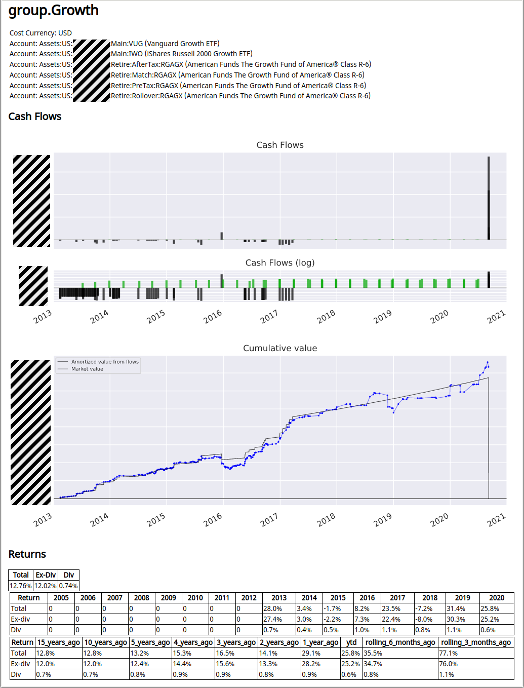

Calculating Portfolio Returns
Martin Blais, Sept 2020
http://furius.ca/beancount/doc/returns
This document describes how to compute portfolio returns from a Beancount ledger
Status: Draft
Motivation
You will be surprised to find that discount brokers typically do not provide accurate and complete returns calculations for your investments based on your specific cash flows. They tend to report other measures of performance:
-
Change in value. The simplest they provide is a snapshot of the account value at the beginning and end of the period (or year). The problem with this method is that it does not reflect your infusions or removal of cash as such, nor your changes in positions. For example, if you had an account with $50,000 at the beginning of the year and you've added in $30,000 in August, reporting a difference of $37,000 at the end of December is just not useful (you'd have to mentally discount for new invested cash during the year, and what if you want to break it down and compare the returns from different instruments in the account?).
-
Underlying performance. They might report the growth of the underlying asset in isolation, disregarding your specific positions. It's not very useful to say "HDV grew by 8.2% over the last year" if you invested only (or even mostly) in the second half of the year. What I'd like is to know how much my specific investments grew, given my specific changes in positions and timings. In other words, how did I do?
-
No dividends. Another issue is that performance is typically only reporting capital appreciation due to the change in price of the investment. Ideally one would like to break down the performance between capital appreciation and dividends and returns for each of those components, as well as overall performance, so you can compare returns from stocks and bonds to each other. You can sometimes find out that information from the Yield field in the summary, but for uneven distributions, this won't help me find out what my actual returns from dividends were, over any period.
-
Commissions and management expenses. Some brokers charge management expenses on a monthly basis, based on the value of the account. I would like to know what my portfolio return is net of those expenses.
I want accurate returns reporting, based on my actual cash flows and changes of positions over time.
If I maintain your investment information in a Beancount ledger, in theory it contains all the data I need in order to compute your true returns, based on the specific timings of my own savings (cash infusions) and which positions I held at which time. It's just not in the simplest format required to do it— Beancount transactions are much more flexible than one might want and a simpler series of cash flows needs to be extracted from it. This document explains how I finally did this from my own Ledger. And how we might generalize this to yours, based on some simple rules for data entry. Most of this text is dedicated to the pedestrian details of extracting the right data.
The source code can be found here.
In addition, a fair and honest comparison to other investments scenarios should be possible, based on those same cash flows. For instance, you should be able to produce data that looks like "My investments in ZZZ have returned 8.2%, 1.1% of which were from dividends, and if I'd invested in a 60/40 portfolio of broad stocks and bonds it would have returned 7.2% instead." In other words, I want to assess my performance relative to a number of common alternatives.
(Finally, note that if all you need is a snapshot of your current positions, that's already handled by the export script.)
History
In 2014, I made a brief attempt to break down information from my ledger to do this. At the time I got bogged down in details when some of the time-series I was extracting weren't producing what looked like sensible results (some with outliers). I got too detailed too fast. Sometimes it's better to just get the whole job done and come back for the details. I hadn't logged enough debugging information and I didn't have enough confidence in its output to use it. I never actually finished the work at the time, and eventually moved the scripts to experiments and shrugged. "Later."
In August 2020, I sat down to do this again, this time with a less ambitious goal of just getting a good approximation and producing lots of debug output, boiling down extraction to pull out just the cash flows and to get the job complete over all my accounts, even if it meant making some adjustments to my input file. It turned out to be the right decision: I managed to complete the task, and this document presents my journey, the method, its assumptions, quirks, and some results.
Method Overview
The method I'll use is to extract cash flow information for each investment. What I call "an investment" in this context is a kind of financial instrument, e.g., shares of "VTI" for the Vanguard Total Stock Market ETF, invested in a particular account, e.g. a Vanguard 401k. A list of cash flows is a dated list of positive or negative currency being invested or withdrawn as proceeds to/from that investment. So I have a list of cash flows per account, and each account records only one instrument.
For reporting I'll group those per-account series in logical units, for example lumping together ones for the same instrument bought in different accounts / brokers, or different instruments that represent the same underlying by merging their cash flows. Or even to group them by "strategy". Basically, by merging the cash flows of multiple accounts, I have a generic way to group any subsets of accounts and compute their returns.
Using the cash flows, I will then run a simple root finding routine to calculate the average (annual) rate those flows would have to grow in order to result in their final market value. This provides me with overall returns. This is similar to calculating the Internal Rate of Return. I will do that for the entire time series, but also for sub-intervals within the time series to compute, e.g. calendar returns (i.e., each year or quarter) or cumulative returns for trailing periods. Since cash flows are flagged as dividends or not, I can separate the returns from appreciation from the returns from dividends. Reports with plots are produced for each of the groups.
Extracting Cash Flow Data
This section describes the various steps I took to extract relevant data from my ledger.
Finding Accounts
First, we need to figure out the list of available investments to report on. By convention I keep pairs of dedicated leaf accounts for each commodity type in my ledger, one to contain the actual positions and one to receive dividends, e.g., for "VTI" held in broker "BTrade", accounts like
2012-03-01 open Assets:US:BTrade:Main:VTI VTI
2012-03-01 open Income:US:BTrade:Main:VTI:Dividend USD
This has two consequences: (a) it makes it easy to find the list of accounts that contain investments (any account with a leaf account name that is also one of the commodities found in the ledger), and (b) it nicely isolates all the activity related to each of those investments by finding all the transactions with a posting to that account. I recommend you follow the same convention in your chart of accounts. The result is a list of accounts like "Assets:US:BTrade:Main:VTI", specific to each (instrument, institution).
I further filter down this list to the subset of accounts which were still open up to 15 years ago (I close my accounts—using Beancount's Close directive—when they're done). In my particular case, I didn't have much savings back then, and there's no point in bothering to do the work to normalize those crumbs in my investing history for that far back.
Extracting Relevant Transactions
For each of the identified asset accounts, we want to pull out from the ledger's transactions the list of transactions affecting that account. We simply run through the entire ledger's transactions keeping just the transactions with a posting to that account.
Note that dividend payments will not have an asset posting so it's necessary to also adjust the regular expression we match account names to, to include not just the asset account, but also our dividend income account, as described in the previous section. A typical dividend payment would contain only the dividend income posting and a cash posting (for the deposit), e.g.:
2019-11-27 * "Dividend"
Income:US:BTrade:Main:VTI:Dividend -123.45 USD
Assets:US:BTrade:Main:Cash 123.45 USD
We'll see examples of these in the template section.
Account Categorization
The next step is to generalize the set of accounts witnessed in the transactions for an instrument to account categories based on their role in the transaction. For example, if I inspect my "VTI" trades, I will encounter the following accounts:
Assets:US:BTrade:Main:Cash
Assets:US:BTrade:Main:VTI
Expenses:Financial:Commissions
Income:US:BTrade:Main:VTI:Dividend
I map each account to one of several generic categories (I could probably simplify this now):
ASSET # The account holding the commodity.
CASH # Transfers from other cash accounts, employer contributions.
PNL # Profit/loss income accounts.
INTEREST # Interest income accounts.
DIVIDEND # Dividend income accounts.
ROUNDING # Misc adjustment accounts.
OTHERASSET # Trades in other commodities.
OTHERDIVIDEND # Dividends in other commodities.
EXPENSES # Commissions, fees and other expenses.
CONVERSIONS # Currency conversion transactions.
TRACKING # Mirror tracking accounts in other currencies.
UNKNOWN # Uncategorized.
Like this:
'Assets:US:BTrade:Main:Cash': <Cat.CASH: 2>
'Assets:US:BTrade:Main:VTI': <Cat.ASSET: 1>
'Expenses:Financial:Commissions': <Cat.EXPENSES: 9>
'Income:US:BTrade:Main:VTI:Dividend': <Cat.DIVIDEND: 5>
In this way, I can compare transactions to each other across instruments. For example, a transaction signature of "DIVIDEND + CASH" is a dividend payment, and I write a generic handler to extract the cash flows for this. The categorization was implemented using a set of ad-hoc rules on my account names; it could probably be generalized if the ledger is assumed to follow some naming rules on accounts, or by requiring metadata on the Open directives.
Fixup: In the process I noticed many irregularities in how I named my accounts. For example, I used ":Dividend" and ":Dividends" sometimes. I went through my ledger and made some changes to name accounts coherently, and iterated until all my accounts were categorized correctly.
Transaction Signature
Using the account-category mappings from the previous section, I'm able to derive a unique "signature" for each transaction, e.g. a transaction like this:
2020-03-12 * "(DOI) ORDINARY DIVIDEND"
Income:US:Ameritrade:Main:VTI:Dividend -1312.31 USD
Assets:US:Ameritrade:Main:Cash 1312.31 USD
would have a signature of
CASH_DIVIDEND
Which hopefully is always a dividend payment. I had my script output two sets of files for debugging:
-
Account details. A file for each account, rendering a list of all the transactions extracted for it, decorated with metadata showing the categorizations inferred, as well as the categorization map over all the accounts. I inspected these files visually to ensure that my automated rules were correct.
-
Signature transactions. A file for each unique signature, with the full list of transactions matching that signature. By inspecting these Beancount files, I made sure that all the transactions with the same signature were indeed having the same role.
At this point, I had a limited list of unique signatures, each with clear unique roles:
ASSET_CASH : Purchase or sale
ASSET_CASH_EXPENSES : Purchase or sale with commission
ASSET_CASH_PNL : Purchase or sale and profit
ASSET_CASH_PNL_EXPENSES : Purchase or sale with commission and profit
ASSET_EXPENSES : Fee paid from liquidation
ASSET_PNL : Cost basis adjustment (with P/L)
ASSET_PNL_EXPENSES : Fee from liquidation (with P/L)
ASSET : Conversion
ASSET_DIVIDEND : Dividend reinvested
CASH_DIVIDEND : Dividend payment
CASH_PNL_DIVIDEND : Dividend payment and gains distribution
ASSET_OTHERASSET : Exchange of stock/symbol
Now, instead of trying to come up with a general rule for extracting flows from just the account categories, I wrote specific handlers to produce the cash flows corresponding to each of those transaction signatures, reasoning about each of them one-by-one. (It might be possible to review that code and simplify it further, but I like how each of the template transactions has an explicit handler with well-documented reasoning behind the production of its corresponding cash flows).
Fixups: In practice I encountered 3 or 4 more signatures types that were a bit exotic and by fixing up my ledger I managed to either change or correct these transactions to equivalent but simpler ones. In particular, one of my importers was lumping together trades occurring on the same day, and I went back and fixed it and those transactions manually. The ASSET_OTHERASSET signature, in particular, is an exchange of stock (Google -> GOOG,GOOGL). Doing something like this brings up idiosyncrasies in your bookkeeping technique. Being consistent and using fewer templates is helpful.
Cash Flows
The handlers described in the previous section each produced a list of cash flows per transaction, and together for the account, they are essentially a list of:
(Date, Amount, IsDividend, Balance)
This is a simple model to work from. For each account, we now have a sorted series of dated cash flows. Note that Amount includes its cost currency (I have both USD and CAD), IsDividend is a flag identifying the cash flow as being a dividend payment or not (to compute returns without the dividends), and Balance is the resulting account balance after this transaction occurs. Balance will be useful to truncate series of cash flows in order to compute returns over arbitrary sub-intervals (e.g., per year).
These series of cash flows can be easily merged between accounts, and truncated over time by inserting initial or final cash flows corresponding to the market value at those dates.
Grouping Accounts
For reporting, I'm choosing to build arbitrary groups of accounts, for many reasons:
-
Same underlying. Some instruments represent the same stock, e.g. GOOG and GOOGL (different share class, same company). Or IAU and GLD (Gold).
-
Asset class. Instruments from the same asset class, e.g. "metals", which would include IAU, GLD, SLV, COPX, etc., or "REITs", which would include VNQ, VGSLX, etc. Or "all stocks" vs. "all bonds".
-
Strategy. In my portfolio investment method, I have a multi-headed approach where I define specific broad strategies and then select a list of instruments to implement it.
-
For instance, I have a "tech sector" strategy, which includes FAANG companies.
-
Or a "growth stock" strategy, which might include different indexes like VUG, IWO and RGAGX. I can report how well those strategies are doing, across brokers.
-
Or geographically, "developed APAC", including EWY, EWT, EWS, EWA.
-
-
Broker. I can report returns by broker or broker account. This is useful because realized profits are treated differently in some accounts (e.g., 401k is tax-deferred).
-
Asset type. Comparing index funds with managed mutual funds.
These are specified from a JSON file loaded in my script. I create this file to explicitly specify all the subsets of accounts I want to produce a returns page for, like this:
{
"group.Metals": [
"Assets:US:BTrade:IAU",
"Assets:US:BTrade:GLD",
"Assets:US:Schwab:IAU",
"Assets:US:Schwab:SLV",
"Assets:US:Fidelity:RothIRA:IAU"],
"group.Reits": [
"Assets:US:Fidelity:RothIRA:VGSLX",
"Assets:US:BTrade:VNQ"],
…
}
For reference, I use more than 20 reporting groups.
Computing Returns
Finally, for each of those groups, the cash flows are merged together. I use scipy.optimize.fsolve to calculate the rate that satisfies net present value:
cfi/(1 + irr)ti= 0
where cfi are the signed cash flow amounts and ti are the times from today for each cash flow. We solve for irr. To compute the returns ex-dividend, we just exclude cash flows returning from dividends. The difference tells us how much of our returns was due to dividend income.
It's important to note that if the corresponding positions are still invested, you have to insert a final negative cash flow for the market value of that position to zero it out. You're essentially simulating a sale. If significant transaction costs are going to be involved, you might want to simulate those as well (e.g. if you're doing this for a home, in particular).
Here's the beauty in this: nowhere was the underlying price used, except for marking the current position value to market value. We did not read any external measure of returns. These returns are computed from cash going in and coming out. These are actual realized returns. You cannot lie to yourself.
Subintervals. To compute calendar returns, e.g., returns for years 2016, 2017, 2018, 2019, 2020, I truncate the cash flows to keep only those in the interval, e.g. 2018-01-01 to 2018-12-31 for year 2018, and if there was an existing position at the beginning of the interval, insert a cash flow at the start of the series equivalent to the market value at those dates. Do the same thing at the interval end date, with a negative cash flow, as described previously.
Ideally I'd like to look at three things:
-
Total returns over the entire lifetime of the positions, to boil it all down to a single number.
-
Calendar year/quarterly returns over the last 10 or 15 years, to witness variation in returns.
-
Cumulative returns over the last 10 or 15 years, aligned on calendar periods, to get a sense of whether things are improving or worsening, and how well my strategies are doing in more recent periods (e.g. last 3 years).
-
Cumulative returns over the last 12 months, aligned with monthly or weekly dates, to assess the impact of decisions in the short-term.
Filling in Missing Price Points
The calculations of returns over various intervals require marking positions to market value at the beginning and end of the interval dates. Beancount being designed hermetically, i.e., it does not fetch any price externally, only uses what's in the ledger, its price database lookup will automatically produce the last available price point and its recording date. Depending on your recording discipline, some of those prices might be out-of-date and introduce inaccuracies. This is especially important since the amounts converted are large; this is used to estimate the value of current positions.
So it's important to have relatively fresh price points in the ledger's price database. Now the question is, given a changing set of positions over time, for a given set of interval dates, which price entries are required to produce?
Because this depends heavily on the particular inputs of the returns script, in order to solve this problem I simply wrapped the price database with a facade that collected all the (date, instrument) pairs for requested conversions during the production of the returns reports, when the date was older than some age threshold (e.g., 3 days). These are essentially the price points missing from my database.
At the end of the script, I output these to a file with Price directives, and another program I wrote will read it and fetch historical rates for those, and output updated rates. I pasted the output in my ledger file as a one-off adjustment. Pulling data from Yahoo! Finance worked for 90% of my positions, but some of my older instruments were quite old or even retired, or not available (e.g., some retirement funds), so I had to find them by browsing and manually entering some of these price points (I had something like 30… no big deal).
Rolling windows. One important point is that going forward, it will be easier to align reporting intervals to some calendar-based interval (e.g., monthly), so that I don't have to regenerate price data every time I produce my returns. Aligning to months is probably good enough for my time horizon.
Currency Conversion
Another important detail is that each investment has its own quote currency. I used to live in Canada, and some of my older investments are denominated in CAD. So the question arises: do I compute the returns in local (CAD) currency, or in terms of my reference currency (USD)?
It's convenient that Beancount's Inventory object has functions that can easily perform those conversions where needed. And since the cash flows I extracted are stored using Beancount's Amount object, I already have the quote currencies correctly in my extracted dataset. In any group, if all the instruments have the same quote currency, I report returns in that currency. If the group includes a mix of quote currencies, I further convert everything to USD (so I get USD returns).
Comparison against benchmark
As of 2020-09-04, I haven't implemented this yet. This picture is complicated by cash-flows from sales, and the need to generate realistic dividends. Beancount does not currently have a database of % dividend distributions from assets.
Reporting Results
For each reporting group, I currently produce:
-
A plot of the cash flows over time, and a smaller plot of log(cash flows). Dividend payments are typically dwarfed by cash flows for the principal, so the log chart allows me to see timings. This is mainly used to get an overview of activity over time, and for debugging.
-
A plot of cumulative value, where I render two curves:
-
Cumulative cash flows, with a growth curve matching that returns I regressed over. The result should be a plot with gentle slope between cash flows (corresponding to the total returns growth), with a final drop to zero.
-
Market value over time: A curve of the mark-to-market value of the portfolio over time. This allows me to make some sense of calendar returns, by witnessing how the asset value moves based on price.
-
-
A table of total returns, returns without dividends, and returns from dividends only.
-
A table of calendar returns for each year, also broken down by total, ex-dividends, dividends-only. (I'll probably render this as a plot in the future.)
-
A table of trailing cumulative returns.
Example
Here's an example report, for a subset of accounts with a "growth" focus, held at different brokers. I produce one of these for each reporting group. (I greyed out relevant parts for privacy.)

Interpretation Gotchas
A few notes are in order:
-
All rates are annualized. This makes it easy to compare numbers to each other, but it also means that positions held for a short amount of time will produce numbers that are unrealistic for long term extrapolation. In particular, new positions entered only a few months ago may be subject to high growth or a big drop, both of which when extrapolated to an entire year may show eye-popping percentages. Keep this in mind.
-
The curve is nominal (does not account for inflation). When looking at amounts over long periods of time, it would be useful to discount the curve over time using the CPI (or some other estimate of inflation, you could even make up your own, from your ledger), so that we can look at a curve of real growth and not nominal growth.
-
Taxes aren't factored in. Returns from taxable accounts and tax-deferred accounts should be evaluated differently. I could compute an estimate after-tax return and deal with this approximately (after all, I have all the lot dates so I can automatically figure out short-term vs. long-term lots). It's not 100% obvious though, because in the US, taxes are only due on realization, and positions held for the long-term will grow without tax withdrawals, so ultimately, this depends on the expected schedule of withdrawals or sales.
Extending to Other Instruments
Using the same methodology, we can include other types of instruments:
-
Real Estate. Cash flows can be extracted from all transactions for a home. This will require much more categorization work, and given the rarity of such purchases, it will be best done as a separate project. Most importantly, since most places offer tax incentives on interest payments and/or gains, it will be crucial to include a tax estimate for this project.
-
P2P Lending. I've used LendingClub before it collapsed. Again, with adequate categorization, it would be possible to apply the same methodology to compute returns from those investments.
This is recent work, and work in progress. Part of the motivation for this document is to stimulate a discussion of reasonable constraints to generalize this and make it useful for others.
TODO:
-
Add example of cash flows truncation for a period (tables).
-
Put in examples for each of the signature templates.
-
Mention something about cost basis being irrelevant, add taxes section.
-
Automatically extracting configuration, and translating it to one that can be modified manually.
-
Split up inference of configuration and pulling together account data from calculation.
-
Flatten list of CF to a single CF per transaction.
-
Do home
-
Do options
-
Do P2P lending